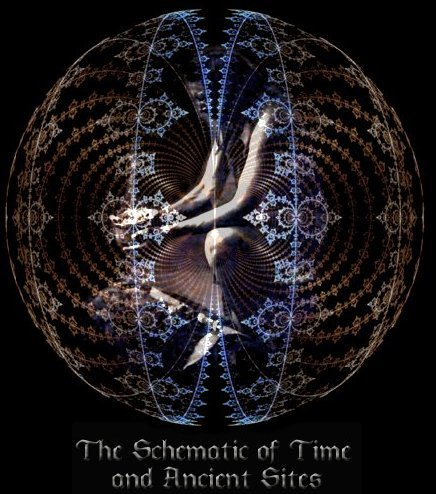

Enter
Enter
Additional Pages
Ancient Site Stories
T
he Schematic of God
The Schematic of God
-
Free Book
Tree of Life
The Time Shaman
The Time Shaman
-
Free Book
Petroglyphs
Time Shaman Sitemap
Chauvet Cave Understandings
Orb Pictures
Dowsing Page
The Solutrean Confederation
Tie Creek Site
Bannock Point Site
Remote Viewing Sculptures
Scientifically Minded
Spiritually Minded
Remote Viewing - Comparing Accuracy
Consciousness - Structure
Note Page
Communicating with a Sasquatch
Remote Viewing Research
Tie Creek UFO
Solutrean Boats
Cave de Vinci
Site Map
Discoveries in the News
Current Research Projects
The Olmec - Shang Connection
Why did the Olmecs Disappear
How
to Research a Site
+
2nd page
Ancient Sacred Sites
-
New
Ancient Sacred Sites Book
-
Free updated
Teleportation Physics Study
Petroglyph Misconceptions
Remote Viewing Mary Magdalene
Orbs
to
the Sphenoid
Website Links
- Helpful People
Vortex and the Grid
Soul Groups
Science Discovers Angles
Energy Sappers
-
New
©
-
You are welcome to copy and distribute all you want as long as you give credit to this source.
essence2@telus.net
Bill Dayholos April 11 2013
©
Updated April 4 2014